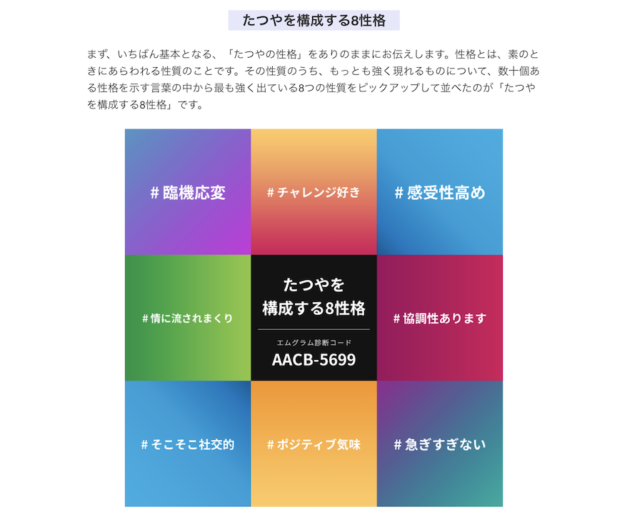
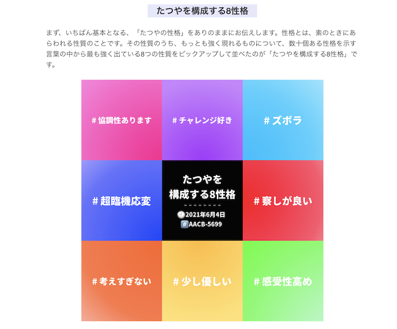

Why me LT 会
2024.11.24
前田 達也(まえた たつや)
前田 達也(まえた たつや)
| 氏名 | 前田 達也 |
|---|---|
| ニックネーム | まえたつ |
| 生まれ / 育ち / 住まい | 鳥取県 / 鳥取県 / 東京都 |
| 年齢 | 38歳 (1986.8.4) |
| 趣味 | 散歩・ラジオ |
| 得意 | 大きな声 |
| G'sとわたし |
TOKYO LAB9期として2020年入学 入学と共にコロナ渦へ突入 卒業後チューターを務め STAFFとしてジョイン |
| 卒業制作 |
英語学習ARアプリ TARNGO |
| 今の役割 | CS(カスタマーサクセス) |
=もうちょっと前=
=ちょっと前=
=現在=